遊びで植物を育てよう
2024/12/31
柚子のタネで化粧水を作りました。

この化粧水の効果があるのかないのかはよく分かりませんが、市販のハンドクリームより付けた後の肌触りが好きなので使っています。
【柚子TOP】
【果物TOP】
【園芸TOP】
2024/12/01
今年のユズは丁度いい量です。
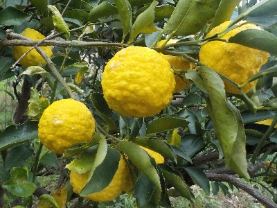
毎年大量に出来るので、刻んで冷凍している柚子を週5くらいのペースで消費していました。
今年はいつもより数が少なめなので、週3くらいになるかも。
【柚子TOP】
【果物TOP】
【園芸TOP】
2024/01/04
柚子が変色しだしました。
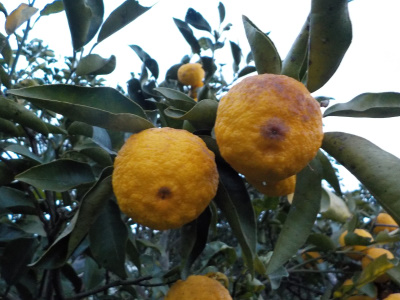
柚子熟れて色が変わってきました。収穫は今日で終わりにしよう。
【柚子TOP】
【果物TOP】
【園芸TOP】
2023/12/24
柚子の冷凍作業を始めます。

まだ去年の柚子が冷凍庫にありますが、もう収穫しないと柚子が乾燥して萎れるので収穫することにしました。年末年始は長時間柚子を触っているでしょう。
【柚子TOP】
【果物TOP】
【園芸TOP】
2023/12/10
去年の柚子がまだ残っていますが、柚子を少し収獲しました。
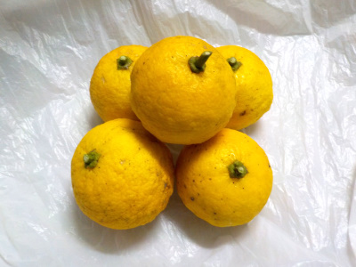
古いものまだあると想うと、新しいものを収獲する気がしないです。
本格的に収穫できるのはいつになるんだろう。
【柚子TOP】
【果物TOP】
【園芸TOP】
2023/01/16
柚子の化粧水を作りました。
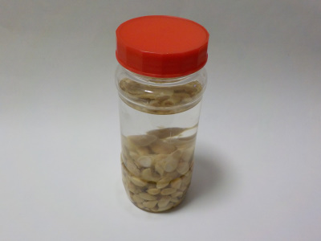
焼酎に柚子の種を入れて化粧水を作ることにしました。
1週間もすればとろみが出て、保湿効果がある化粧水になるそうです。
効果があるかな?。効果があったとして、ちゃんと使い切れるかな?。ちょっと不安です。
【柚子TOP】
【果物TOP】
【園芸TOP】
2023/01/08
柚子を収獲しながら剪定しました。

柚子の収穫をしていたんですが、高い場所や枝が混みあっている所の実が採りにくかったので、剪定しながら収獲しました。
枝ごと採ると簡単ですね。来年も1月になったら剪定しながら収獲しようと思います。
【柚子TOP】
【果物TOP】
【園芸TOP】
2022/12/18
雪が降るようになったので、柚子を沢山収獲しました。
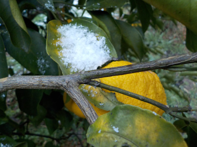
コツコツ収獲して冷凍している柚子ですが、雪が降るようになったのでペースアップです。
今週からの目標は、週に36個分冷凍です。
【柚子TOP】
【果物TOP】
【園芸TOP】
2022/12/04
柚子の収獲を始めました。

今日は柚子を24個収獲しました。
まだまだ木に沢山付いています。柚子の木が雪の重みで枝が折れないように、ドンドン収獲して冷凍保存しようと思っています。
【柚子TOP】
【果物TOP】
【園芸TOP】
2022/11/03
柚子がそろそろ食べれそうです。
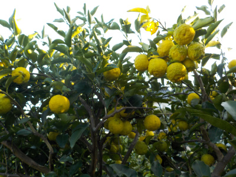
最近急に色づいてきました。もうちょっとで真っ黄色になって食べ頃ですね。
柚子を何に使おうかとネットで調べたんですが、なかなか新しい発見はないです。
【柚子TOP】
【果物TOP】
【園芸TOP】
2022/01/08
遅くなりましたが、柚子を収獲しました。
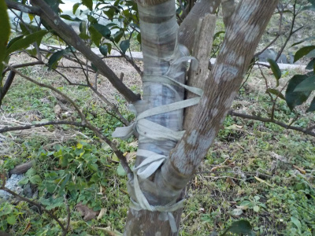
去年雪の重みで折れた柚子ですが、接ぎ木テープや紐でぐるぐる巻きにして椹木したのが良かったみたいで、今年も収獲出来ました。
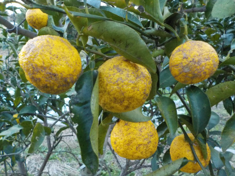
一部表面がザラザラのものがありました。
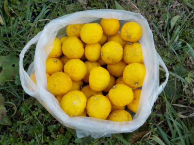
表面がキレイめなものを収獲しました。
去年と比べるとだいぶ少ないですが、十分な量です。
【柚子TOP】 【果物TOP】 【園芸TOP】
2021/12/11
ゆずが食べごろになりました。
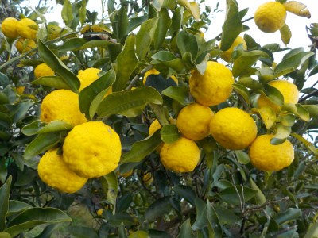
柚子が綺麗な黄色になりました。
早く収獲した方がいいですけど面倒ですね。
年末に収穫して、お正月に冷凍しようかな。
【柚子TOP】 【果物TOP】 【園芸TOP】
2021/05/15
ゆずの鉢を大きくしました。
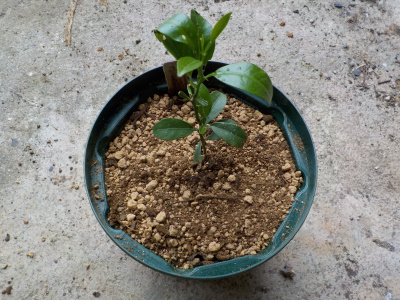
ゆずの木を大きくしたいので鉢を大きくしました。
これで日当たりの良い場所に置いてもある程度耐えれるでしょう。
【柚子TOP】 【果物TOP】 【園芸TOP】
2020/12/31
雪の重みで柚子の木が折れました。
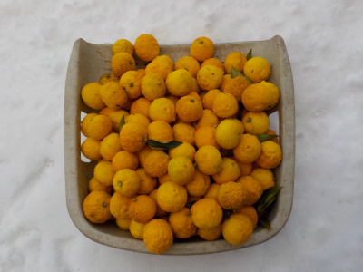
横枝が折れるくらいならなんてことないですが、真中の部分が折れてしまいました。
折れた部分の柚子を収獲しましたが、大漁ですね。
これ、どうしましょう？
毎日コツコツ洗って、切って冷凍しようと思っています。
あんまり根詰めてやると体に悪いので、嫌になったら捨てます。無理しない。無理しない。
【柚子TOP】 【果物TOP】 【園芸TOP】
2020/11/23
柚子が大量に実っています。
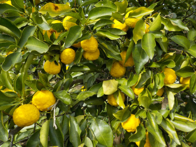
いっぱいあるけど去年の柚子が沢山あるのでまだ食べれません。
大量に美味しく消費する方法はないものだろうか？
最近はお湯で割ったり、ヨーグルトや甘酒に混ぜて食べています。
【柚子TOP】 【果物TOP】 【園芸TOP】
2020/04/18
柚子を土に植え替えしました。
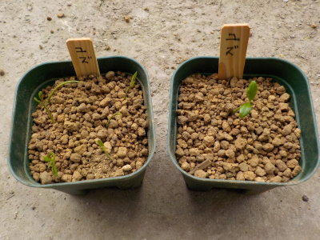
1つは１本だけ、残りはまとめて植えました。
【柚子TOP】 【果物TOP】 【園芸TOP】
2020/02/29
柚子の根っこが出ました。
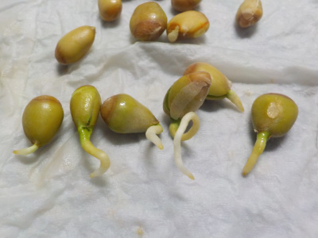
柚子の種から根っこが出ました。
芽が出たら植え替えしようと思います。
【柚子TOP】 【果物TOP】 【園芸TOP】
2020/01/17
柚子の種を育てることにしました。
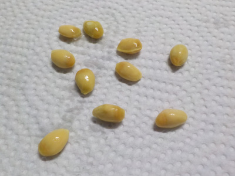
柚子の実生は実が出来るまでに長期間掛かるので、買った方がいい的な意見が多いと思います。
実際はどうなんでしょうね。
売り物だって地植えにしたら何年も実が出来ないのでおなじじゃないの？とか思ったりします。
今ある柚子の予備用に育てようと思います。
【柚子TOP】 【果物TOP】 【園芸TOP】
2019/01/14
柚子を大量に収穫しました。
2018/01/08
ゆずを細かく切りました。
2017/02/05
ゆずが痛んでいました。
2016/11/20
ゆずをドンドン食べよう。
2016/02/21
ゆずが地面に落ち出しました。
2015/12/06
柚子湯の季節がきました。
2015/02/28
塩柚子ってあるんですね。
2014/12/14
今年も柚子湯スタートです。
2014/03/08
柚子もそろそろ終わりです。
2013/11/09
ゆずが沢山できています。
【柚子TOP】
【果物TOP】
【園芸TOP】
畑仕事じゃないよ。
【おいしいものを食べよう。】【たくさん寝よう。】
【ソロ活をしよう!】【季節感のあることをしよう。】【動画視聴はほどほどに。】【当サイトの全てのコンテンツは無断転載禁止です。】